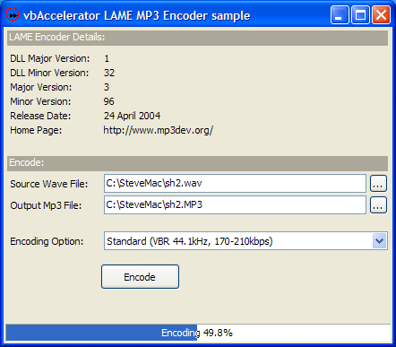

Lame DLLs (151K)
Lame DLLs (151K)
 VB5 Lame MP3 Encoder (65K)
VB5 Lame MP3 Encoder (65K)
 VB6 Lame MP3 Encoder (62K)
VB6 Lame MP3 Encoder (62K)
 25 Apr 2004
25 Apr 2004
First Posted
 LAME - Lame Ain't an MP3 Encoder
LAME - Lame Ain't an MP3 Encoder

MP3 Encoding with LAME
Create your own MP3 files using VB
The unfortunately named LAME (Lame Ain't an MP3 Encoder) open source project is a highly-regarded source for creating MP3 files, which is used in a number of projects such as CDEx. This sample demonstrates using the encoding functions from VB to create MP3 files from WAV files.
C Hell
There are a couple of problems which make using LAME a little more tricky than you might hope for if you're from a VB background. The first is that LAME is distributed as C source code only, although the code includes the source needed to build a DLL. This is partly for legal reasons, as using any MP3 encoding technology in a piece of software may require a patent licence in some countries. Assuming you have access to VC++, however, building the files is fairly straightforward. However, there is another problem.
The lame_enc.dll encoder which is produced is not directly usable from Visual Basic. The reason for this is that all of the exported functions are exported with the _cdecl calling convention rather than _stdcall which is used by VB. As described in the article CD Tracklisting using freedb.org, one way to get around this is to create a wrapper DLL in C which simply re-exports the same functions with the correct calling convention.
This is the approach I've taken here. The Lame Encoder Shim Source download includes the source code for the wrapper. If you wish to compile it yourself, then unzip the project into the lame-m.nn directory that you have extracted LAME to, load the Example_vc6.dsw workspace from the Dll subdirectory into VC++ and then add the LameEncShim project to the workspace and hopefully all will be well. Please don't ask me for any advice about using VC++ or trying to convert this to work in VC++7 as I am completely useless at both and only a combination of increasingly desperate hacking and several glasses of Makers Mark allowed me to create the DLL at all.
Both LAME and the encoder shim are released under the LGPL. Please check the gnuLicence.txt provided with the DLLs for details of your obligations if you use these files.
Getting Started With VB
With that nasty rubbish out of the way, we can get back to the somewhat easier world of VB and start working. To use the encoder, you need to put the two Windows DLLs in the Lame DLLs download somewhere that you're VB application will find them. If you're debugging, then the easiest place to put them is in the Windows\System directory, however, for distribution they can be put into the same directory as your application. Note that these are standard Win32 DLLs, not ActiveX DLLs and so they do not need to be registered.
The lame_enc.dll in the download is version 3.96 of LAME. However, the LAME encoder is frequently updated, so you may wish to replace this with the latest and greatest version. This can be done independently of LameEncShim.DLL, which will work with any version of the Lame encoder DLL unless the DLLs API changes (which is pretty unlikely). To get the latest version you will either need to build lame_enc.dll yourself, or find one from another application which includes it, such as CDEx.
About the Demonstration Application
The demonstration application provides a very simple front end to the VB functions which use these DLLs. It displays the LAME encoder version information and allows you to select a source WAV file and an MP3 file destination. The encoder is configured using the preset encoding options which come with LAME, although the code will allow you to make more detailed configuration settings if you want to. Typically using the LAME presets will yield a better result as these presets have been optimised for the best quality.
Clicking Encode starts the encoding process. The application shows a progress bar whilst encoding is underway, and allows the encoding to be cancelled.
Using the Encoder Functions
The LAME encoder DLL is based on the Blade Encoder API, and exposes a bare minimum of functions to initialise a new stream, encode a block of data, close the stream and get version information. To make this API easier to use, there are VB classes which wrap the commonly used functionality. There are four classes you need to encode Wave files to MP3:
- cLameEncoder
This class provides the primary interface for working with encoding. It allows you to configure the encoding options, set file names and perform an encoding. - cLameEncoderVersion
Provides information about the version of the LAME encoder being used. You should display this information to any user of the application. - cWavReader
Used internally to read the WAV audio data. For more information about this class see the Wave File Viewer Control article. - cMp3Writer
Used internally to write the MP3 data out. This class is basically a very simplistic buffered file writer over a pointer to a block of memory.
As demonstrated in the sample, using these wrappers allows you to perform an encoding with only a few lines of code. Firstly, you set up a WithEvents instance of the cLameEncoder class. This allows you to receive the Progress event which allows your application to display progress and cancel any encoding operation:
Private WithEvents m_cEncoder As cLameEncoder
Private Sub Form_Load()
Set m_cEncoder = New cLameEncoder
End Sub
Private Sub m_cEncoder_Progress( _
ByVal samplesDone As Long, _
ByVal totalSamples As Long, _
cancel As Boolean)
' .. Handle Progress and cancellation here
End Sub
Then you set the source WAV file, destination MP3 file and encoding options:
Private Sub CreateMp3File( _
ByVal sourceWavFile As String, _
ByVal destinationMp3File As String, _
ByVal eOption As ELamePresetEncodingOption _
)
m_cEncoder.WavFile = sourceFile
m_cEncoder.Mp3File = destinationFile
m_cEncoder.EncodingPreset = eOption
m_cEncoder.Encode
End Sub
That's pretty much it. If you want your application to stay responsive whilst encoding is underway, you should add a DoEvents call during the Progress event. Remember that any keyboard or mouse input will be processed during the DoEvents so typically you will want to disable areas of the user interface that should not be modified whilst encoding is underway. In particular, you should not call Encode again whilst encoding is underway.
More Details
This section may be of assistance to anyone who wants to customise the workings of the class to work with different input or output sources, or to understand how to configure the MP3 encoder through the more sophisticated customised configuration options.
There are only four calls to the Blade Encoder API you need to perform an encoding:
- beInitStream
Creates a new encoding stream using the passed in parameters and returns the number of samples the encoding stream expects for each encoding call, the size of the buffer needed for the output of each encoding call and a handle to the stream which is used in subsequent calls. - beEncodeChunk
Encodes a chunk of sample data and puts the result into a buffer, returning the actual size of the encoded data. - beDeinitStream
Places any end-of-file data into a buffer. - beCloseStream
Closes any resources associated with the encoding stream once encoding has been completed.
Each function uses the characteristic C error handling style where the return value of the function is a success or error code, defined by the BE_ERR constants:
Public Enum ELameErrorCode BE_ERR_SUCCESSFUL = &H0 BE_ERR_INVALID_FORMAT = &H1 BE_ERR_INVALID_FORMAT_PARAMETERS = &H2 BE_ERR_NO_MORE_HANDLES = &H3 BE_ERR_INVALID_HANDLE = &H4 BE_ERR_BUFFER_TOO_SMALL = &H5 End Enum
In the next four sections I'll look at these calls in more detail.
1. beInitStream
The beInitStream declare is as follows:
Private Declare Function beInitStream Lib "lameencshim.dll" ( _ beConfig As BE_CONFIG, _ pdwSamples As Long, _ pdwBufferSize As Long, _ phbeStream As Long) As Long
- beConfig - a BE_CONFIG type containing the configuration information for the MP3 encoding.
- pdwSamples - a variable which receives the number of samples the encoder will process in each block.
- pdwBufferSize - the size of the buffer to allocate to receive output from the encoder.
- phbeStream - the handle to the newly opened stream, if successful.
The main work in setting up a stream is setting up the configuration information. The BE_CONFIG structure can have alternative forms depending upon what use it is being put to, however, in the case of the LAME engine you only need to consider the LHV1 form:
Private Type BE_CONFIG_FORMAT_LHV1 dwStructVersion As Long dwStructSize As Long dwSampleRate As ELameSampleRate dwReSampleRate As Long nMode As ELameOutputModeOption dwBitRate As ELameBitRate dwMaxBitrate As Long nPreset As ELamePresetEncodingOption dwMpegVersion As ELameMP3Version dwPsyModel As Long dwEmphasis As Long bPrivate As Long bCRC As Long bCopyright As Long bOriginal As Long bWriteVBRHeader As Long bEnableVBR As Long nVBRQuality As ELameVBRQualityOption dwVbrAbr_bps As Long nVBRMethod As ELameVBRMethodOption bNoBitRes As Long bStrictIso As Long nQuality As Integer bPadding(0 To 236) As Byte End Type Private Type BE_CONFIG_FORMAT lvh1 As BE_CONFIG_FORMAT_LHV1 End Type Private Type BE_CONFIG '331 dwConfig As Long ' EBeConfigFormat, 4 format As BE_CONFIG_FORMAT ' 327 End Type
The fields in the LVH1 structure are as follows:
- dwStructVersion - version of the structure, should be set to 1.
- dwStructSize - size of the overall BE_CONFIG structure, in this case 331 bytes.
- dwSampleRate - sample rate in Hz for the MP3 file. This
can be set to one of:
- 32000, 44100 or 48000 for MPEG-I
- 16000, 22050 or 24000 for MPEG-I
- 8000, 11025 or 12000 for MPEG-II.5
- dwReSampleRate - specifes the resampling rate to use against the input stream. Setting this to 0 causes the encoder to decide the rate.
- nMode - the stereo mode of the Mp3 file. This can be one of:
- BE_MP3_MODE_STEREO
- BE_MP3_MODE_JSTEREO
- BE_MP3_MODE_DUALCHANNEL
- BE_MP3_MODE_MONO
- dwBitRate - specifies the bit rate to use. For Constant Bit-Rate (CBR) encoding, this is the actual bit rate, whereas for Variable Bit-Rate
(VBR) encoding it specifies the minimum. Allowable values are:
- 8 - MPEG-II only
- 16 - MPEG-II only
- 24 - MPEG-II only
- 32
- 40
- 48
- 56
- 64
- 80
- 96
- 112
- 128
- 144 - MPEG-II only
- 160
- 192 - MPEG-I only.
- 224 - MPEG-I only.
- 256 - MPEG-I only.
- 320 - MPEG-I only.
- dwMaxBitrate - When VBR mode is enabled, this specifies the maximum allowed bitrate. The same values as dwBitRate are used.For CBR mode this setting is ignored.
- nPreset - one of the preset encoding options to
use. Note that presets can overwrite the other settings, since the call to
apply the preset's setting is made just before the encoder is initialised.
- LQP_NOPRESET - don't use any presets
- LQP_NORMAL_QUALITY - quality is set to 5.
- LQP_LOW_QUALITY - quality is set to 9.
- LQP_HIGH_QUALITY - quality is set to 2.
- LQP_VOICE_QUALITY - use for voice encoding.
- LQP_R3MIX - r3mix preset option
- LQP_VERYHIGH_QUALITY - quality is set to 0
- LQP_STANDARD - lame command line alt-preset standard
- LQP_FAST_STANDARD - lame command line alt-preset fast standard
- LQP_EXTREME - lame command line alt-preset extreme
- LQP_FAST_EXTREME - lame command line alt-preset fast extreme.
- LQP_INSANE - lame command line alt-preset insane.
- LQP_ABR - lame command line alt-preset abr.
- LQP_CBR - lame command line alt-preset cbr.
- dwMpegVersion - the MPEG version to use, one of
- MPEG1 = 1
- MPEG2 = 0
- dwPsyModel - this parameter does not appear to be used currently. Assumption is that it would be for adjusting a parameter to the Psycho-Acoustic model.
- dwEmphasis - - this parameter does not appear to be used currently. Assumption is to configure the emphasis amount.
- bPrivate - If this is set to TRUE (1) the Private bit in the MP3 stream will be set.
- bCRC - Set this to TRUE in order to enable CRC-checksum in the bitstream.
- bCopyright - If this is set to TRUE the Copyright bit in the MP3 stream will be set.
- bOriginal - If this is set to TRUE the Original bit in the MP3 stream will be set.
- bWriteVBRHeader - Specifes if the XING VBR header should be written or not. When this option is enabled, you have to call the beWriteVBRHeader function when encoding has been completed. Keep in mind that the VBR info tag can also be written for CBR encoded files, the TAG info can be useful for additional info like encoder delay and the like.
- bEnableVBR - Whether to enable VBR encoding.
- nVBRQuality - VBR quality option, one of
- VBR_QUALITY_0_HIGHEST = 0
- VBR_QUALITY_1_HIGH = 1
- VBR_QUALITY_2_HIGH = 2
- VBR_QUALITY_3_MID = 3
- VBR_QUALITY_4_MID = 4
- VBR_QUALITY_5_MID = 5
- VBR_QUALITY_6_MID = 6
- VBR_QUALITY_7_LOW = 7
- VBR_QUALITY_8_LOW = 8
- VBR_QUALITY_9_LOWEST = 9
- dwVbrAbr_bps - specifies an Average Bit Rate (ABR)
encoding. If this is specified, the lame encoder ignores the
nVBRQuality settings. To use this, bEnableVBR must be set to TRUE and
the nVbrMethod parameter should be set to VBR_METHOD_ABR).
The allowed range for the average bit rate is an integer value between:
- MPEG-I: 32000 .. 320000 bps
- MPEG-II: 8000 .. 160000 bps
- nVBRMethod - the VBR method to use. One of
- VBR_METHOD_NONE = -1
- VBR_METHOD_DEFAULT = 0
- VBR_METHOD_OLD = 1
- VBR_METHOD_NEW = 2
- VBR_METHOD_ABR = 4
- bNoBitRes - Disables the bit-resorvoir and disables the insertion of padded frames.
- bStrictIso - Set strict ISO compatibility for the encoding.
- nQuality - Set the quality, from 0 (highest) to 9 (lowest). For backward compatibility reasons, the quality value must have the high-byte set to Not the low-byte. So the values will be: &HFF00 = 0, &HFE01 = 1 ... &HF609 = 9.
- bPadding - Not used, provided for future expansion.
2. beEncodeChunk
This function is called repeatedly on each chunk of waveform data to create the MP3 output file. The declare is as follows:
Private Declare Function beEncodeChunk Lib "lameencshim.dll" ( _ ByVal hbeStream As Long, _ ByVal nSamples As Long, _ pSamples As Any, _ pOutput As Any, _ pdwOutput As Long _ ) As Long
- hbeStream - Handle to the encoding stream previously returned by beInitStream.
- nSamples - The number of samples to convert. This must be equal or less than the dwSamples number returned by beInitStream.
- pSamples - pointer to a buffer containing the samples. Each sample is assumed to be a 16-bit value.
- pOutput - pointer to the buffer to write the MP3 data to. Data in this buffer is assumed to be an array of 8-bit values.
- pdwOutput - variable which will receive the actual number of bytes written to the buffer for this encoding chunk.
In the download code, the input buffer is a memory-mapped file view onto a source Wave file using the multimedia API functions, and the output buffer a block of memory allocated using the LocalAlloc API. However, since the encoding works on memory buffers, there is no need to have files as a source. For example, the input buffer could be a pointer to a stream of data read from a CD, or from the analogue input from the PC.
3. beDeinitStream
This function writes any terminating data out to the buffer, so it works very similarly to the beEncodeChunk function, the only difference being that it does not require any input data and so the nSamples and pSamples parameters are not required. The declare is:
Private Declare Function beDeinitStream Lib "lameencshim.dll" ( _ ByVal hbeStream As Long, _ pOutput As Any, _ pdwOutput As Long) As Long
4. beCloseStream
This function performs clean up of any resources allocated for the MP3 file, and should be called as soon as the encoding has been completed.
Private Declare Function beCloseStream Lib "lameencshim.dll" ( _ ByVal hbeStream As Long) As Long
Conclusion
This article demonstrates how to use the LAME encoder to create MP3 files from WAV files using VB. To do this, a very simple wrapper over the LAME encoder DLL is needed which provides direct wrappers around each of the LAME functions to modify the calling convention so it can be used from VB. The code should be easy to work with to create MP3s from WAV data sources other than files as well.